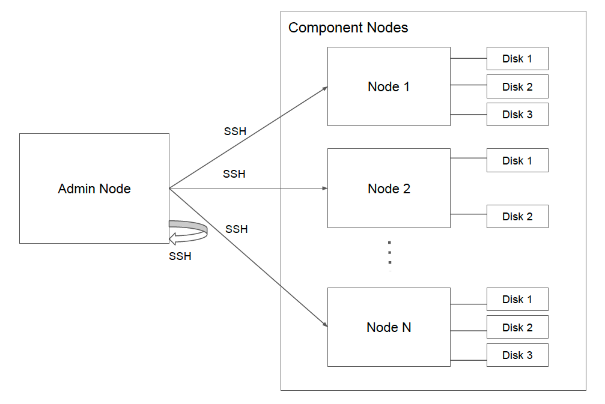

Install Chango Admin
Chango Private is Data Lakehouse Platform which can be installed in both connected and disconnected environment.
Chango Private consists of Chango Admin and Chango Components. All the Chango Components will be installed by Chango Admin,
so you need to install Chango Admin before installing Chango Components.
Prerequisites
There are several things to prepare before proceeding to install Chango Private.
Supported OS and Python
Supported OS and Python Version are:
CentOS 7.9Python 3.6.8
Prepare Chango Nodes
In order to install Chango Private, we need nodes. Let's call it as Chango Nodes.
Chango Nodes consist of Chango Admin Node on which Chango Admin will be installed and Chango Component Nodes on which
Chango Components will be installed.

First, you will install Chango Admin, and then all the components will be installed by Chango Admin through ansible playbook using SSH.
So, you need to prepare at least 4 nodes to install Chango Private.
NOTE: 1 node for
Chango Admin Nodeandat least 3nodes forChango Comonent Nodes. That is, you need to haveat least 4nodes to install Chango Private.
With respect to hardware requirement, 2 cores and 4GB memory is good for Chango Admin Node, but for Chango Component Nodes,
there are many variations to determine how much capacity you need for Chango Component Nodes.
The following components provided by Chango Private are the components which can affect the determination of hardware capacity.
Open Ports
You need to open ports in your subnet of Chango Nodes. See the details of Chango Private Ports.
Password-less SSH Connection
From the node of Chango Admin Node, sudo user must access to Chango Component Nodes with password-less SSH connection.
The following needs to be configured.
sudouser with the same name needs to be created on all the nodes ofChango Admin NodeandChango Component Nodes.- configure password-less SSH connection with the created
sudouser fromChango Admin NodetoChango Component Nodes. - configure password-less SSH connection with the created
sudouser fromChango Admin Nodeto the self host ofChango Admin Node.
Configure Host Names
You need to configure host name on all the nodes of Chango Admin Node and Chango Component Nodes.
For example, the following DNS entry is configured in /etc/hosts on Chango Admin Node.
Create sudo User
For example, we will create sudo user with the name of chango.
In order to add to sudo user,
And add the following.
NOTE: You need to create such
sudouser on all the nodes ofChango Admin NodeandChango Component Nodes.
Create SSH Keys
You need to generate SSH keys on Chango Admin Node logged in as the sudo user created before.
Configure SSH with no key checking. Open SSH configuration file.
Add the following.Add permission to configuration.
Copy the created public key on Chango Admin Node to all the nodes of Chango Component Nodes and the self host of Chango Admin Node.
Open authorized_keys on the nodes of Chango Component Nodes and the self host of Chango Admin Node, and paste the public key to it.
NOTE: Take a note that you also need to add public key to the self of
Chango Admin Node.
And add permission.
And, test if password-less ssh access works from Chango Admin Node to the nodes of Chango Component Nodes and the self host of Chango Admin Node
# access to nodes of chango component nodes.
ssh chango-comp-1.chango.private;
ssh chango-comp-2.chango.private;
ssh chango-comp-3.chango.private;
ssh chango-comp-4.chango.private;
# access to self host of chango admin node.
ssh chango-admin.chango.private
Attache Raw Disks to Chango Component Nodes
As depicted in the above picture, several Raw Disks must be attached to Chango Component Nodes. But you don’t have to mount any disks to Chango Admin Node.
NOTE: Raw disks attached to
Chango Component NodesMUST NOT be mounted! Chango will mount attached disks as logical volume by installing Chango Components later.
Set Selinux to Permissive
You need to set selinux to permissive on all Chango Nodes with the following command.
sudo setenforce 0
sudo sed -i 's/SELINUX=enforcing/SELINUX=permissive/g' /etc/selinux/config
sudo sed -i 's/SELINUX=disabled/SELINUX=permissive/g' /etc/selinux/config
Add Yum Repositories
For online environment, add the following yum repository on all the Chango Nodes.
NOTE: For offline and disconnected environment, you don't have to do it.
Local Yum Repository
If you want to install Chango Private in disconnected environment, you need to install local yum repository which all the Chango Nodes will look up.
NOTE: If you want to install Chango Private in connected environment, skip this instruction.
On the Node of Local Yum Repository
On the host of local yum repository, you need to follow the below instructions.
Install NGINX proxy.
curl -L -O https://github.com/cloudcheflabs/chango-libs/releases/download/chango-private-deps/nginx-1.14.0-1.el7_4.ngx.x86_64.rpm
sudo rpm -Uvh nginx-1.14.0-1.el7_4.ngx.x86_64.rpm
Open port of 80.
Install yum utils.
Create directories of local yum repository.
# local repo directory.
export LOCAL_REPO_BASE=/data/var/www/html
export LOCAL_REPO_DIR=${LOCAL_REPO_BASE}/repos;
# create repo directories.
sudo mkdir -p ${LOCAL_REPO_DIR}/{base,epel,extras,updates};
Synchronize Yum Repos to Local Repo.
# synchronize repositories to local.
sudo reposync -g -l -d -m --repoid=base --newest-only --download-metadata --download_path=${LOCAL_REPO_DIR}/
sudo reposync -g -l -d -m --repoid=epel --newest-only --download-metadata --download_path=${LOCAL_REPO_DIR}/
sudo reposync -g -l -d -m --repoid=extras --newest-only --download-metadata --download_path=${LOCAL_REPO_DIR}/
sudo reposync -g -l -d -m --repoid=updates --newest-only --download-metadata --download_path=${LOCAL_REPO_DIR}/
# create new repo for local.
sudo createrepo -g comps.xml ${LOCAL_REPO_DIR}/base/
sudo createrepo -g comps.xml ${LOCAL_REPO_DIR}/epel/
sudo createrepo -g comps.xml ${LOCAL_REPO_DIR}/extras/
sudo createrepo ${LOCAL_REPO_DIR}/extras/
sudo createrepo -g comps.xml ${LOCAL_REPO_DIR}/updates/
sudo createrepo ${LOCAL_REPO_DIR}/updates/
Create NGINX configuration.
, and add the following configuration.
server {
listen 80;
server_name chango-private-yum-local-repo.chango.private;
root /data/var/www/html/repos;
location / {
index index.php index.html index.htm;
autoindex on;
}
}
Remove NGINX default configuration.
Start NGINX.
Now, you can see the list of RPMs.
If internet is available to the host of local yum repository, create crontab to update local yum repository.
Add the following job.
#!/bin/bash
##specify all local repositories in a single variable
LOCAL_REPOS=”base epel extras updates”
##a loop to update repos one at a time
for REPO in ${LOCAL_REPOS}; do
reposync -g -l -d -m --repoid=$REPO --newest-only --download-metadata --download_path=/data/var/www/html/repos/
createrepo -g comps.xml /data/var/www/html/repos/$REPO/
createrepo /data/var/www/html/repos/$REPO/
, and add permission.
On the Nodes of Chango Admin Node and Chango Component Nodes
As yum client nodes to local yum repository, you need to configure the followings on the nodes of Chango Admin Node and Chango Component Nodes
to look up remote local yum repository server.
Move current yum repo configurations.
Create configuration of local yum repository.
Add the following configuration.
[local-base]
name=CentOS Base
baseurl=http://[local-yum-repo-ip]/base/
gpgcheck=0
enabled=1
[local-epel]
name=CentOS Epel
baseurl=http://[local-yum-repo-ip]/epel/
gpgcheck=0
enabled=1
[local-extras]
name=CentOS Extras
baseurl=http://[local-yum-repo-ip]/extras/
gpgcheck=0
enabled=1
[local-updates]
name=CentOS Updates
baseurl=http://[local-yum-repo-ip]/updates/
gpgcheck=0
enabled=1
Replace [local-yum-repo-ip] with the ip address of local yum repository.
Refresh yum repository.
Test yum install, for example.
Download Chango Private Distribution
If you want to install Chango Private in public, then, before downloading Chango Private distribution,
you need to be logged in as sudo user created before on Chango Admin Node, for example.
Download Chango Private distribution.
curl -L -O https://github.com/cloudcheflabs/chango-libs/releases/download/chango-private-deps/chango-private-2.3.0.tar.gz
And tar the file and move to the installation directory of Chango Private.
Download all Chango Components.
If it takes long time to download chango components, then run the following to download in background.
NOTE: For installing Chango Private in disconnected environment, after downloading chango component files, you need to package the whole distribution directory with downloaded component files to the file(for example, tar.gz) which needs to be transferred to your node in which internet is not available.
Install Chango Admin
Now, you are logged in as sudo user on Chango Admin Node.
NOTE: Make sure that current user is
sudouser created before to accessChango Component Nodesand the self host ofChango Admin Nodewith password-less SSH connection.
Run the following to install Chango Admin.
, which will- install Postgresql database.
- mount attached disks as logical volume on PostgreSQL database host.
- install Chango Admin on the current host.
Enter values for the prompts, for example.
Installing ansible in virtual environment...
Ansible installed...
Ready to install Chango Admin...
Enter FQDN of the target host name on which PostgreSQL database will be installed:
chango-comp-3.chango.private
Enter comma-separated disk paths for LVM mount on the target host of PostgreSQL database (for example, '/dev/sdb,/dev/sdc'):
/dev/sdb,/dev/sdc
Enter current host name on which Chango Admin will be installed:
chango-admin.chango.private
chango-comp-3.chango.privateis for PostgreSQL database host which MUST BE one ofChango Component Nodes, NOTChango Admin Node./dev/sdb,/dev/sdcis for LVM raw disks in comma separated list on PostgreSQL database host.chango-admin.chango.privateis for current host name ofChango Admin Node.
To enter the raw disks, run lsblk for example.
After installing Chango Admin successfully, you need to get randomly genterated password of admin.
Output looks like this.
2023-10-27 03:53:59,863 INFO com.cloudcheflabs.changoprivate.admin.config.AdminUserConfigurer:32 [main] randomly generated password for user 'admin': b3b3c51fde594d7abdd38fbc3eb2a581
For example, b3b3c51fde594d7abdd38fbc3eb2a581 is the password of admin.
The URL of Chango Admin UI is, for example.
NOTE:
8123for Admin UI and8080for NGINX proxy to Admin onChango Admin Nodeneed to be open.
Make sure that the host DNS entries for Chango Admin Node and Chango Component Nodes are added to the host file(for example, /etc/hosts) on your local PC,
for example.
[ip-address] chango-admin.chango.private
[ip-address] chango-comp-1.chango.private
[ip-address] chango-comp-2.chango.private
[ip-address] chango-comp-3.chango.private
[ip-address] chango-comp-4.chango.private
[ip-address] can be public IP address for online environment or private IP address for offline environment.
Login as admin with the randomly generated password. You can change the password of admin in Chango Admin UI Account -> Profile later.
After installing Chango Admin
After installing Chango Admin, several shell files will be created which can be used for your need later.
reinstall-admin.sh: Reinstall LVM mount, PostgreSQL database, and Chango Admin with the same configurations you entered for prompts.restart-admin.sh: Restart Chango Admin.uninstall-admin.sh: Uninstall Chango Admin.uninstall-lvm.sh: Unmount LVM on the host of PostgreSQL database.uninstall-postgresql.sh: Uninstall PostgreSQL database.
NOTE: If you have installed
Chango ComponentsbyChango Adminlater, DO NOT usereinstall-admin.sh,uninstall-lvm.sh, anduninstall-postgresql.shwhich will destroy all the installation of Chango Private!
When the installation of Chango Admin failed with some reasons, you need to run the above shell. If you entered wrong values for the prompts which affects installation failure and want to install Chango Admin again, then run the following sequence.
uninstall-admin.shuninstall-postgresql.shuninstall-lvm.sh
, and then, install Chango Admin again with running start-chango-private.sh.
If you changed the host and port of NGINX for Chango Admin after adding TLS configuration to NGINX,
then, add the variables to --extra-vars in restart-admin.sh, for example.
cpadmin_nginx_scheme=https \
cpadmin_nginx_host=[your-nginx-host] \
cpadmin_nginx_port=[your-nginx-port] \
The revised restart-admin.sh looks like this, for example.
python3 -m venv venv;
source /home/chango/venv/bin/activate;
ansible-playbook -i admin.inv run.yml \
--extra-vars "\
exec_user=chango \
target_hosts=changoprivate-admin-hosts \
role_name=changoprivate-admin \
cpadmin_ansible_path=/data/chango/cp-dist/chango-private-2.3.0/ansible \
run_option=restart \
cpadmin_nginx_scheme=https \
cpadmin_nginx_host=[your-nginx-host] \
cpadmin_nginx_port=[your-nginx-port] \
"
Run the revised restart-admin.sh.